One platform. 3 engineerings. End-to-end MLOps practice.
An end-to-end platform that trains, tracks, deploys, and serves a YOLO object detection model on AWS EKS with Kubeflow, MLflow, KServe, Terraform, Argo CD, and GitHub Actions.
The problem
Machine learning models can deliver strong business value, but moving them from experimentation to reliable production use requires more than model training.
Teams need reliable training platforms to manage scalable compute, experiment tracking, model serving, and automated infrastructure.
This project addresses that challenge by building an end-to-end MLOps platform for a YOLO object detection model from 3 engineering perspectives:
Experiment, train, track, store, and serve the model.
Provide scalable GPU compute, storage, networking, security, and observability on EKS.
Automate infrastructure and application delivery with Terraform, GitHub Actions, Argo CD, and GitOps.
Car plate detection served by the deployed model.
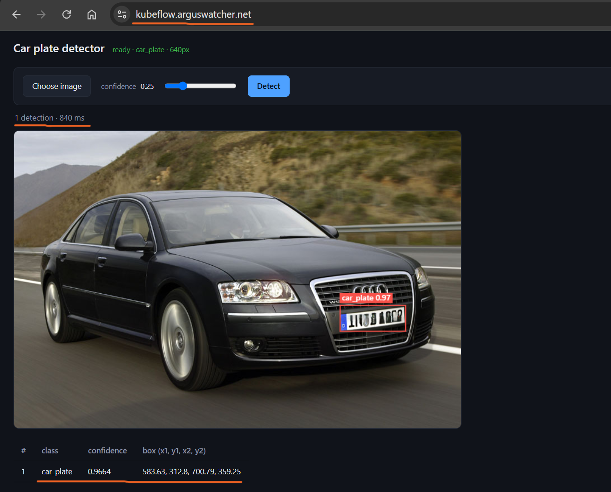
Live application demo: car plate detection
How it fits together
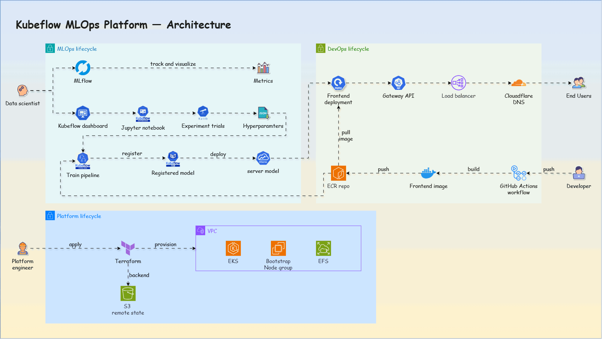
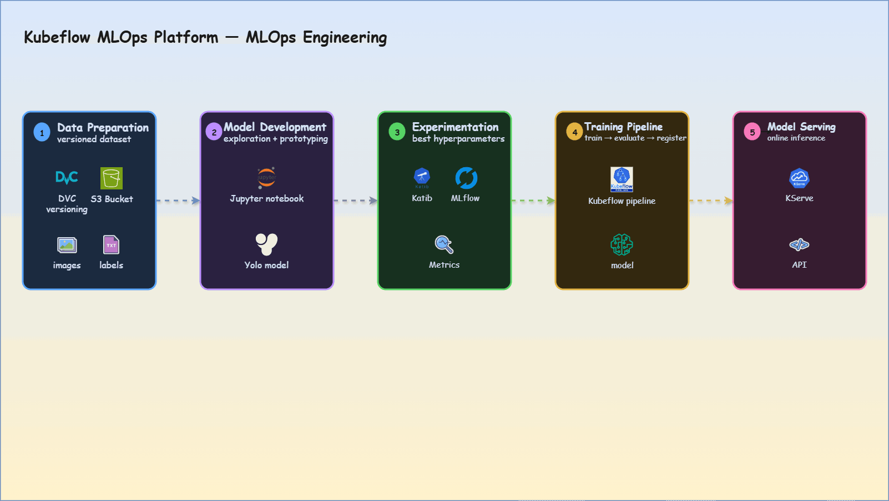
| # | MLOps stage | Components / technologies |
|---|---|---|
| 1 | Data preparation | Images and labels stored in S3; versioned with DVC |
| 2 | Model development | Jupyter Notebook |
| 3 | Experimentation | Katib for hyperparameter trials; MLflow for metrics and run tracking |
| 4 | Training pipeline | Kubeflow Pipeline for orchestration; artifacts stored in S3; model
registered and versioned after training |
| 5 | Model serving | KServe for online inference |
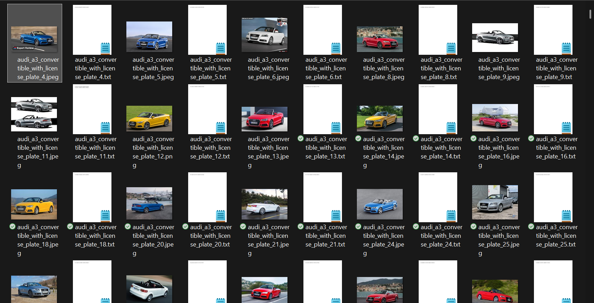
Data: images and labels
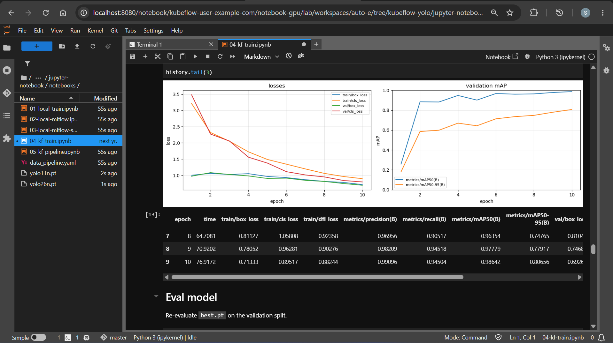
Development: model exploration in Jupyter
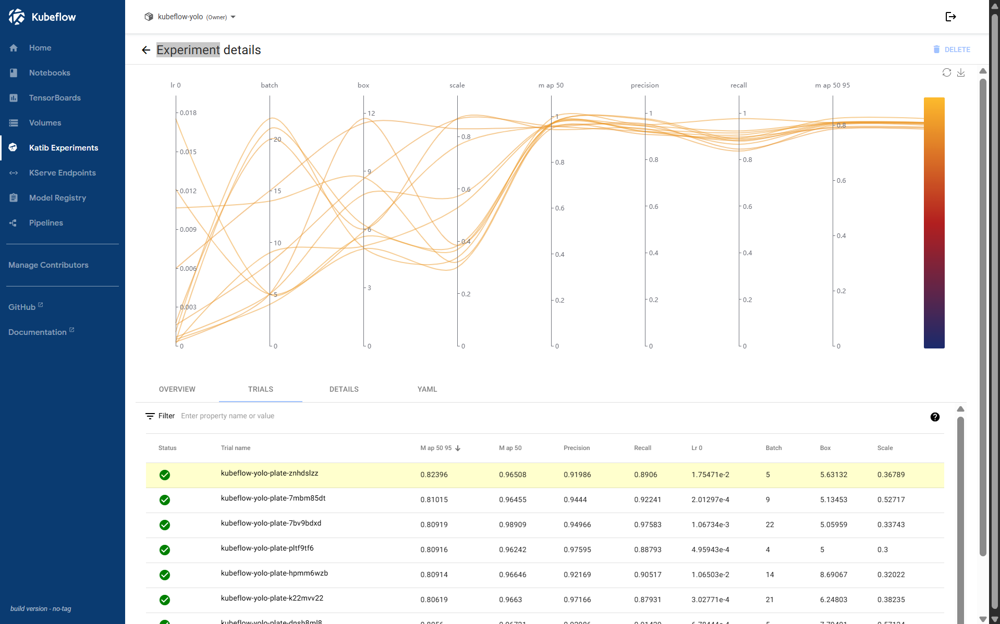
Experiments: Katib runs trials
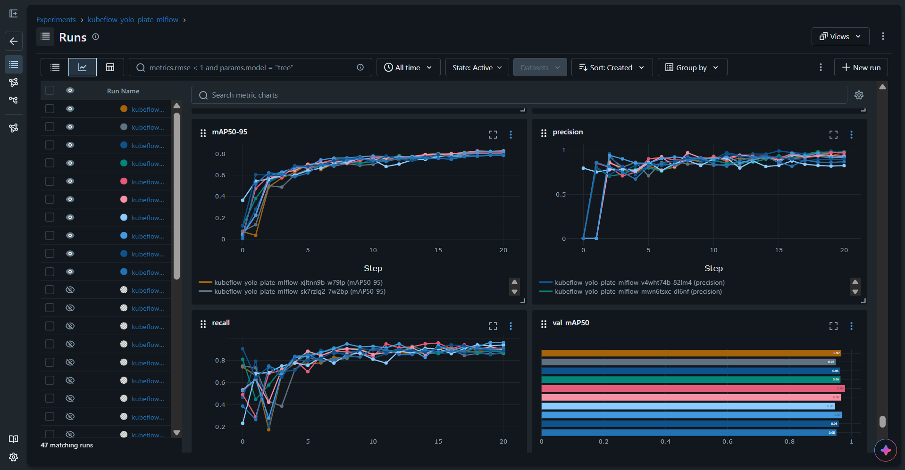
Experiments: MLflow tracks metrics
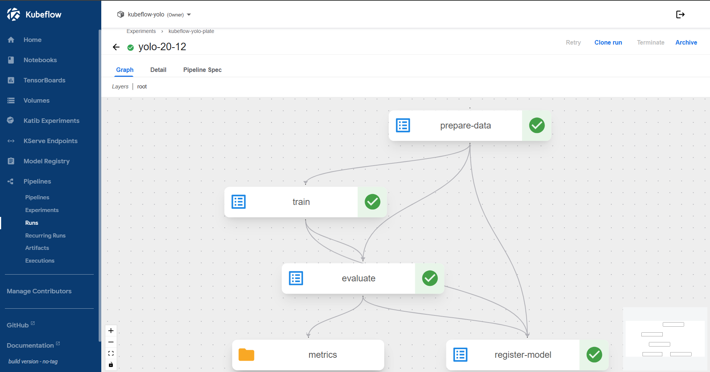
Pipeline: Kubeflow Pipeline trains, evaluates, and registers
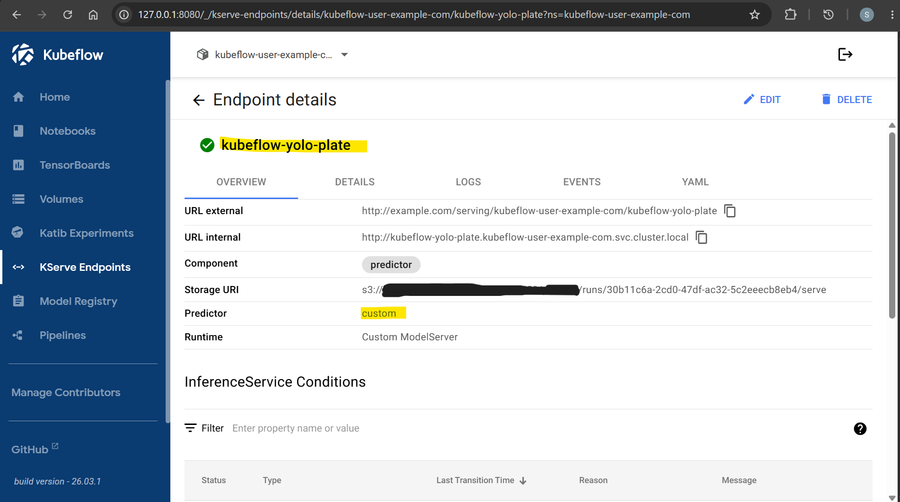
Serving: deploy the selected model with KServe
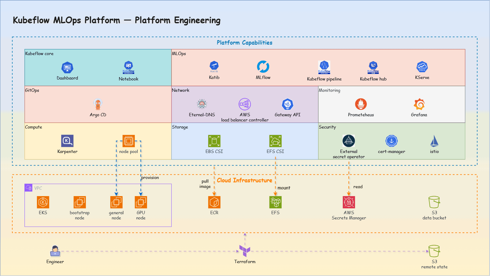
AWS infrastructure is managed with Terraform:
GitHub Actions for fmt, validate, plan, and
apply
| Capability | Infrastructure / cluster | Purpose |
|---|---|---|
| Compute | EKS, Karpenter, node selectors | Autoscaling and GPU node provisioning |
| Storage | S3, EBS, EFS, StorageClass, PVC | Persistent and shared storage for ML workloads |
| Networking | VPC, ALBC, Istio, Gateway API, ExternalDNS | North-south / east-west traffic and automated DNS |
| Security | Secrets Manager, KMS, ESO, cert-manager, NetworkPolicy, mTLS | Secrets, encryption, certificates, and isolation |
| Monitoring | Prometheus, Grafana | Logs and platform metrics |
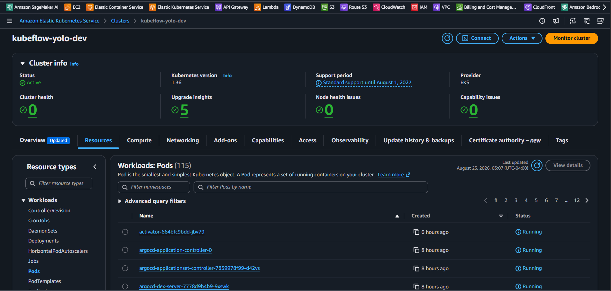
EKS cluster
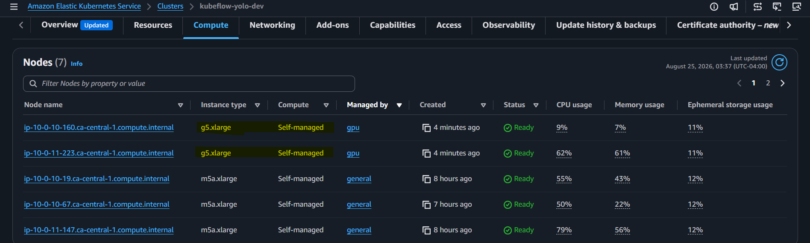
Self-managed GPU nodes via Karpenter
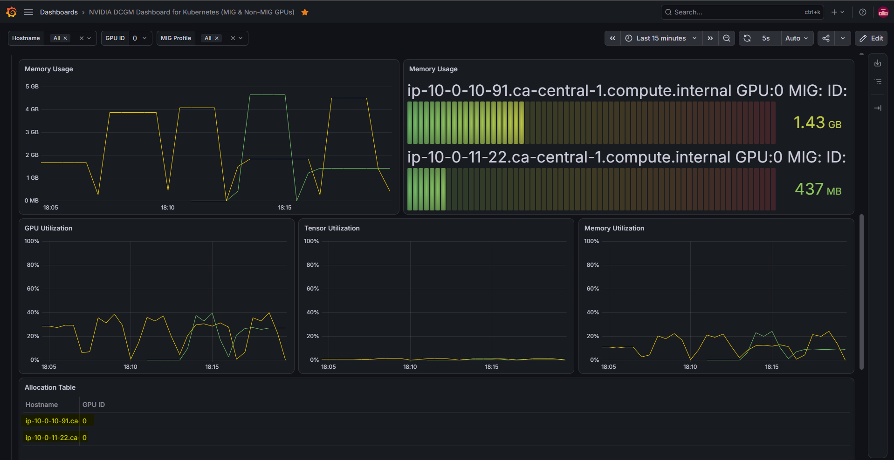
Grafana dashboard: GPU
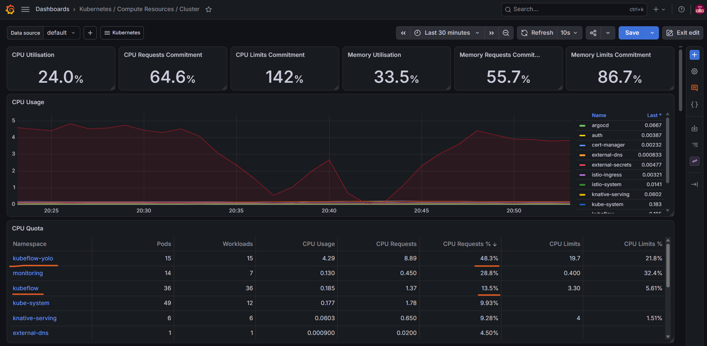
Grafana dashboard: cluster
GitHub Actions| Pipeline | Key steps | Purpose |
|---|---|---|
terraform-apply |
Trigger, fmt, validate, plan, apply |
Deploy infrastructure with Terraform |
build-image-train |
Trigger, build, push | Publish training image to ECR |
build-image-inference |
Trigger, build, push | Publish inference image to ECR |
build-image-frontend |
Trigger, build, push | Publish frontend image to ECR |
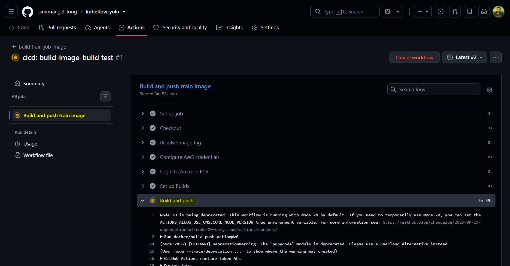
CI/CD pipeline in action
Argo CDDeployment is managed with GitOps practices via Argo CD:
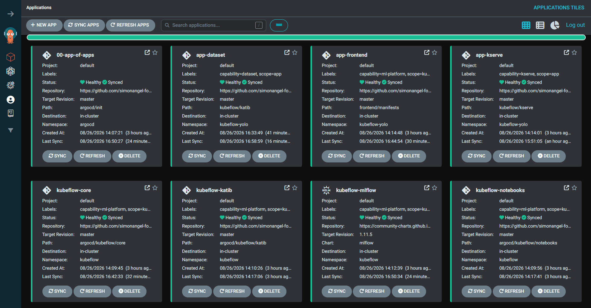
Argo CD in action
What comes next
Deliver an MVP functional end-to-end MLOps platform.
Add model promotion gates, policy as code, latency monitoring, and CI/CD security scanning.
Optimize container builds with multi-stage builds and enable pipeline caching.
Add FinOps practices and deeper Prometheus / Grafana monitoring.